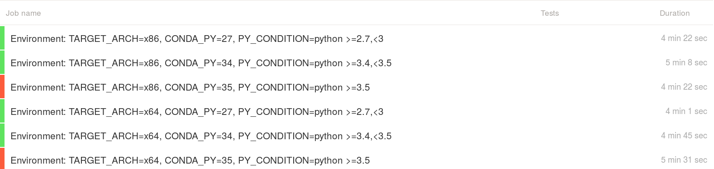

From a Python neuroimaging project test failure
to a Microsoft Visual Studio
compiler bug
in less than 5 minutes
Loïc Estève

\(\)
Context
Nilearn: Machine learning for NeuroImaging in Python
NiBabel: Access a cacophony of neuro-imaging file formats for opening a variety of Neuroimaging file formats (e.g. Nifti images)
Once upon a time (around April 2016)
Nibabel failures on Windows Python 3.5 only:
Test report:
---------------- Ran 7055 tests in 63.415s FAILED (errors=5, failures=16)
An example failure
======================================================================
FAIL: nibabel.tests.test_arraywriters.test_nan2zero_scaling
----------------------------------------------------------------------
Traceback (most recent call last):
File "C:\Miniconda\envs\_test\lib\site-packages\nose\case.py", line 198, in runTest
self.test(*self.arg)
File "C:\Miniconda\envs\_test\lib\site-packages\nibabel\tests\test_arraywriters.py", line 820, in test_nan2zero_scaling
assert_equal(*back_nan_0[:2])
AssertionError: -0.0 != 254.0
Another example failure
======================================================================
FAIL: nibabel.tests.test_utils.test_a2f_nan2zero_scaling
----------------------------------------------------------------------
Traceback (most recent call last):
File "C:\Miniconda\envs\_test\lib\site-packages\nose\case.py", line 198, in runTest
self.test(*self.arg)
File "C:\Miniconda\envs\_test\lib\site-packages\nibabel\tests\test_utils.py", line 432, in test_a2f_nan2zero_scaling
assert_array_equal(back_nan, back_zero)
File "C:\Miniconda\envs\_test\lib\site-packages\numpy\testing\utils.py", line 807, in assert_array_equal
verbose=verbose, header='Arrays are not equal')
File "C:\Miniconda\envs\_test\lib\site-packages\numpy\testing\utils.py", line 733, in assert_array_compare
raise AssertionError(msg)
AssertionError:
Arrays are not equal
(mismatch 33.33333333333333%)
x: array([-9223372036854775808, 100, 254], dtype=int64)
y: array([100, 100, 254], dtype=int64)
Summary of the situation
Failure seems genuine and related to NaN (Not a Number) values
Only on Python 3.5 (released September 2015)
Does not make real sense but it sounds fun already ! (define "fun")
Strategy:
- look carefully at the test function that fails
- print + 1/0 debugging
- iterate until the WTF rate goes down to an acceptable level
First reproducer (numpy)
import numpy as np
arr = np.array([np.nan, 10])
print(np.clip(arr, -1, 1))
Expected (nan unaffected by clipping):
[nan, 1.]
Got (nan replaced by lower bound):
[-1., 1.]
Opened numpy issue: #7601 [Windows Python 3.5 only] np.clip replace nans with lower bound
Drilling further into the rabbit hole
numpy.clipis written in C:
static void
@name@_fastclip(@type@ *in, npy_intp ni, @type@ *min, @type@ *max, @type@ *out)
{
npy_intp i;
@type@ max_val = 0, min_val = 0;
if (max != NULL) {
max_val = *max;
...
}
Full disclosure: I was writing mostly C++ on Windows when I was working in finance some time ago
Windows VM + Visual Studio compiler installed (VS 2015 for Python 3.5)
Slightly painful, but I can do this, right?
Second reproducer (C)
clip function:
void clip(double* in, int size, double min, double max, double* out){
for (int i=0; i < size; i++){
if (in[i] < min){
out[i] = min;
}
else if (in[i] > max) {
out[i] = max;
}
else {
out[i] = in[i];
}
}
}
Second reproducer (C)
main code:
#define SIZE 2
int main() {
double* in = malloc(sizeof(double) * SIZE);
double* out = malloc(sizeof(double) * SIZE);
double min = -1.;
double max = 1.;
in[0] = NAN;
in[1] = 10;
clip(in, SIZE, min, max, out);
for (int i=0; i < SIZE; i++){
printf("i: %d, value: %f\n", i, out[i]);
}
}
Expected (nan unaffected by clip):
i: 0, value: -nan(ind) i: 1, value: 1.000000
Got:
i: 0, value: -1.000000 i: 1, value: 1.000000
Breakthrough
adding a printf(out[i]) in the clip function gets rid of the bug. Numpy
issue reply #7601 comment from @seberg:
I don't know this stuff well, but I would guess that the printf statement kills the compilers optimization to vectorized/SIMD instructions
Indeed related to compiler optimization (loop vectorization):
cl clip_bug.c(without optimization): no bugcl /Ox clip_bug.c(used by Numpy): bug- in particular
/Qvec-report:2gives some useful info
--- Analyzing function: main f:\clip_bug.c(56) : info C5002: loop not vectorized due to reason '1303'
Fix in numpy
I opened #7678 to disable vectorization for VS 2015:
// Visual Studio 2015 loop vectorizer handles NaN in an unexpected manner, see:
// https://github.com/numpy/numpy/issues/7601
// https://connect.microsoft.com/VisualStudio/feedback/details/2723801/unexpected-nan-handling-in-vectorized-loop
#if (_MSC_VER == 1900)
#pragma loop( no_vector )
#endif
with associated non-regression test of course!
This was in the numpy development version until May 2019 (released in numpy 1.17 2019-07-26). See #12519 for more details.
Microsoft bug report
My comment in the #7678 PR:
According to the ticket I opened at connect.microsoft.com there, one person from Microsoft acknowledged that there was a bug in the latest version of the compiler
Summary?
I would be very interested by:
- an explanation about: how can a bug like this slip through in a compiler
- insightful comments about: why a low-level bug like this was discovered in a Python project
More anecdotical:
- sometimes the universe hints at you that you should have stayed in your bed
- most of the times you should probably listen to the universe
- if you don't listen though, you may discover interesting things (no guarantee) …
- AppVeyor build log from three years ago: yes
- Microsoft bug report from three years ago: nope !
Exercise left to the reader:
- Was the bug fixed by Microsoft in a later version of the compiler (as promised in the Microsoft Connect ticket)? My guess is probably yes but I haven't checked.